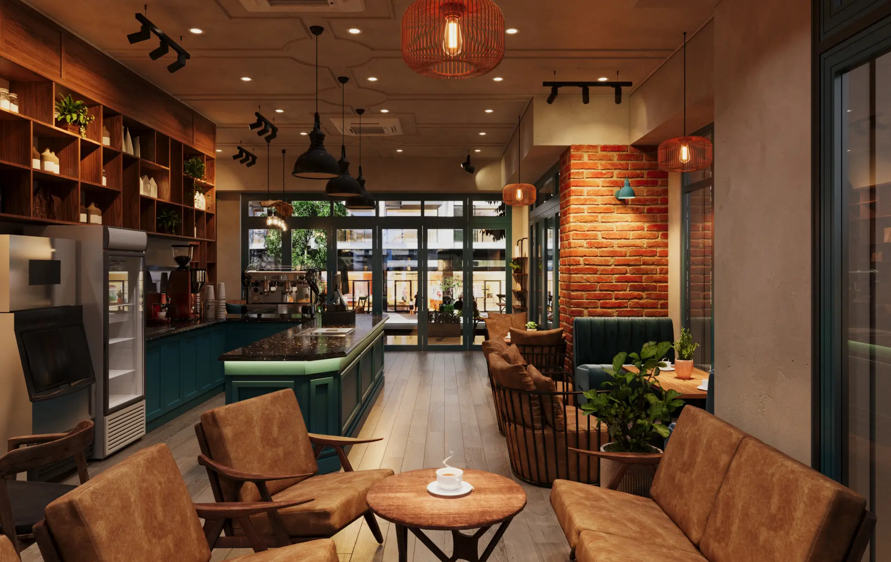
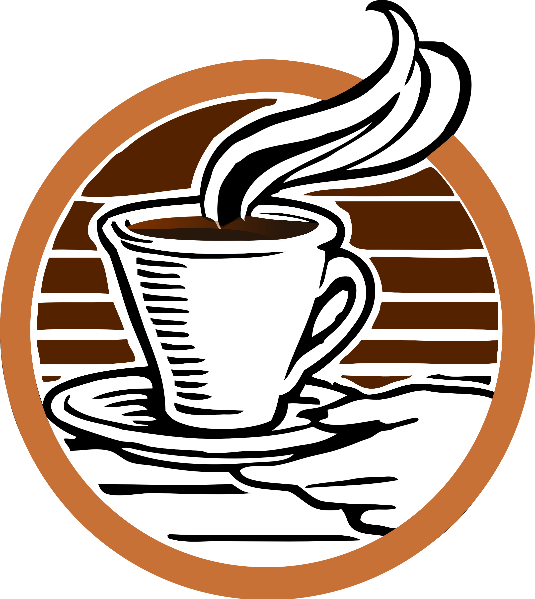
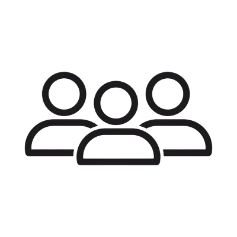
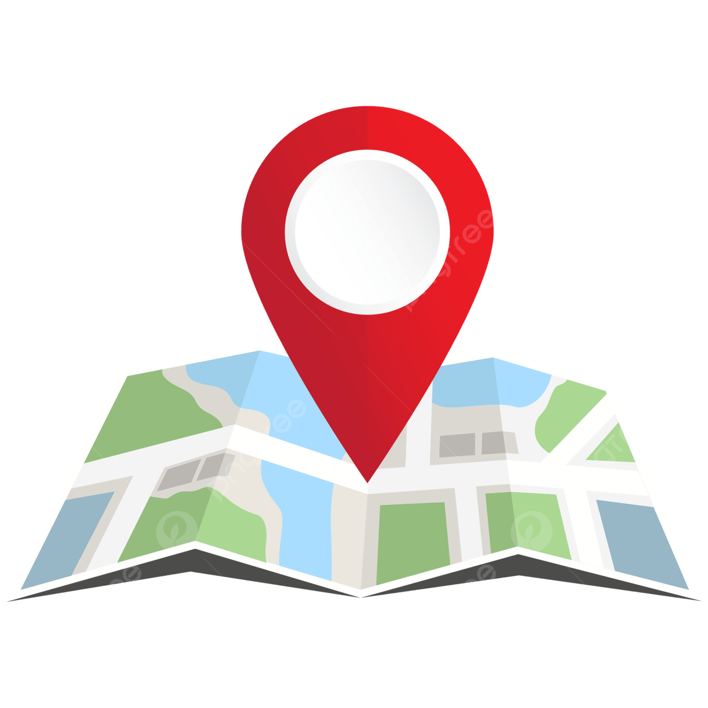

Welcome to Bean & Brew!
Your cozy local café for coffee, pastries, and community events.
Book a Table
Fresh Coffee
Locally roasted beans brewed to perfection.

Relax & Study
Free Wi‑Fi and a quiet atmosphere for students.

Community Events
Workshops, live music, and more every week.
Upcoming Events
Check out what's happening this month at Bean & Brew!
Currently: Nothing is happening!
Find Us
123 Fake Street
Falseville, Lieshire
PA12 L13
Open daily for great coffee and good vibes.
